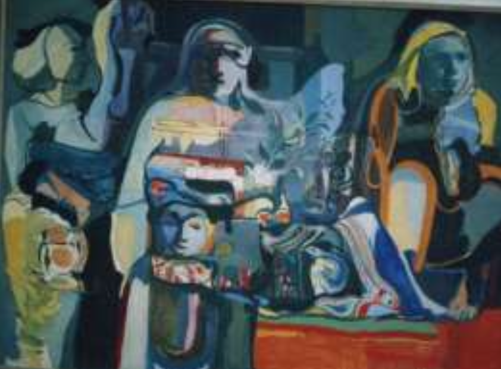

خطاط وفنان ورسام عراقي
ولد في مدينة الحلة في محافظة بابل عام 1352 هـ / 1934م، وبعد إكماله للدراسة الأعدادية دخل معهد الفنون الجميلة وتخرج منه عام 1957م، وحصل على شهادة التخصص بالحفر الليثوغرافي والرسم ولقد شارك في معظم المعارض الفنية داخل العراق وخارجه
كان يعتبر من الفنانيين والأساتذة العراقيين الذين برزوا في عقد الستينيات والسبعينيات من القرن 20، ولقد صنفه الفنانين العراقيين ضمن المدرسة الرمزية. واشتهر في التدريس بمعهد الفنون، وكذلك في الحركة التشكيلية العراقية المعاصرة وكان يدرس مادة الألوان في معهد الفنون الجميلة عام 1968م
تعدتجربةالفنان(محمدعليشاكر)منالتجار التشكيليةالفاعلةالتيكانلهااثاركبيارفيبلورةرؤيمة اشتغالية تعمق حدود الارتباط بين المرجعيات المؤثرة في التجربة وبين الصياغة الاسلوبية العامة له
هيمنت قضايا الانسان ومشكلاته الاجتماعية والنفسية على الموضوعات والمضمامين التمي عمززت تجربتمه وفقا لاعتمادها النزعة الانسانية الواضحة. ولم يغفل دور المأرة في بناء الأسرة والمجتمع فقد جعل لها نسبة كبيرة في رسوماته
كانللموروثالشعبيالمحلي،اثمارفميتشمكيلالمرؤيتينالجماليمةوالفنيمةللفنمان(محممدعلميشماكر)،عبمر توظيف الوحدات البصرية ذات العلاقة بالموروث في معالجته الفنية
ظاهر اللوحة يدل على احتفالية في أجواء من البهجة , ولكن باطنها يحمل رمو از ودلالات تشي بشيء من الوجوم والأسى فعندما نتحرى عن أسس التكوين في اللوحة سنجد الفنان قد حقق الوحدة بأنواعها أهمها وحدة الشكل